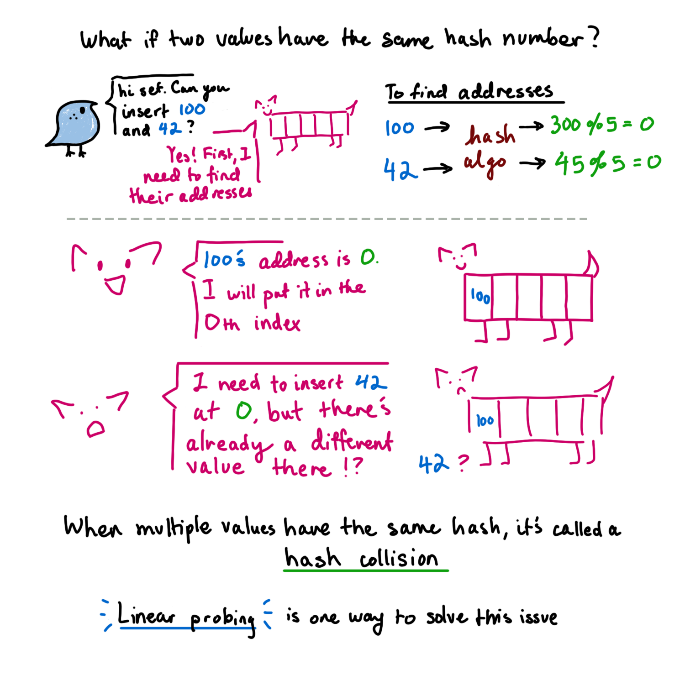
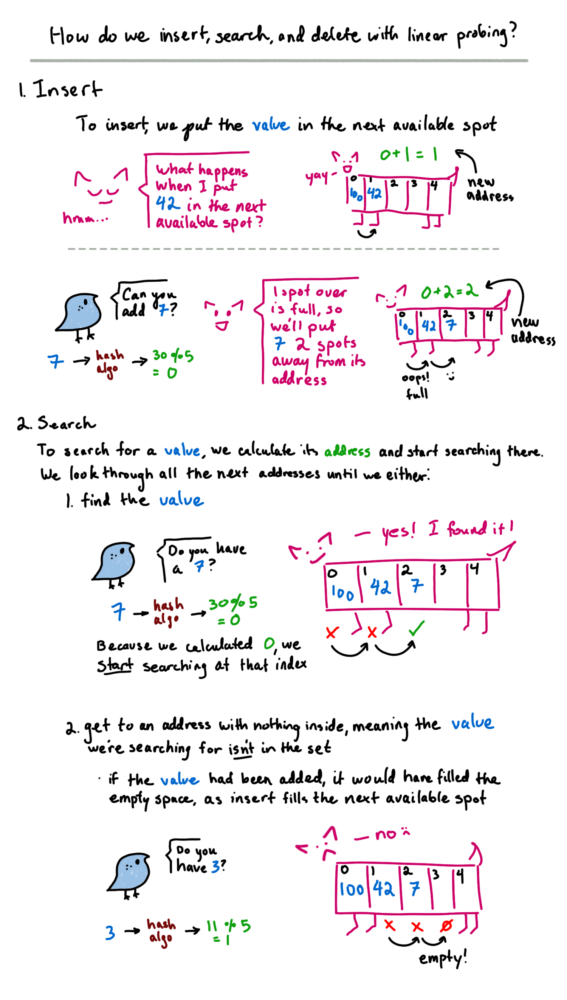
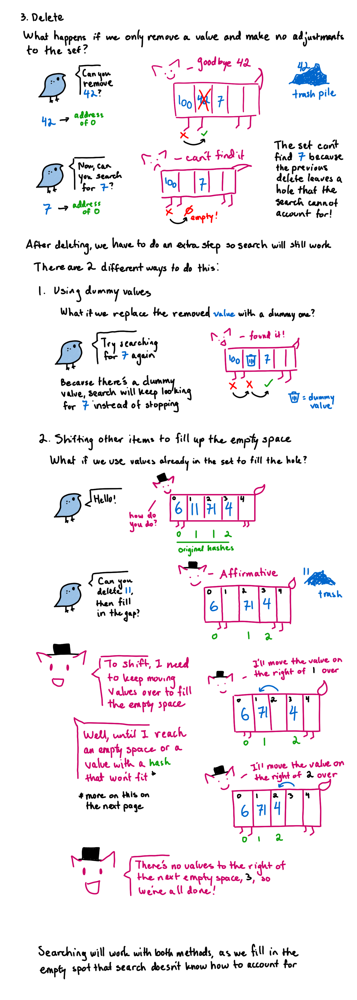
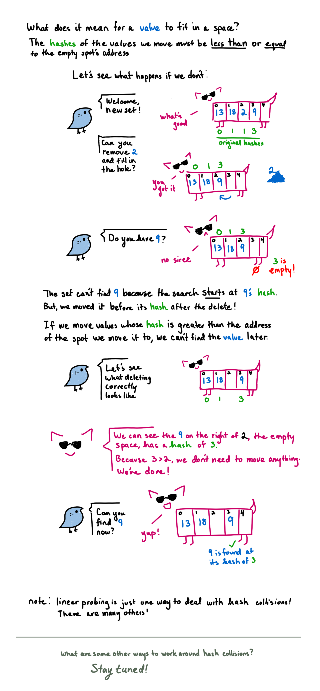

Sets: How to Get Around Hash Collisions
We are going to look at one method of getting around hash collisions: linear probing.
We will cover:
- what does a hash collision look like
- how to insert, search, and delete with linear probing
- how to solve problems with deletion
   